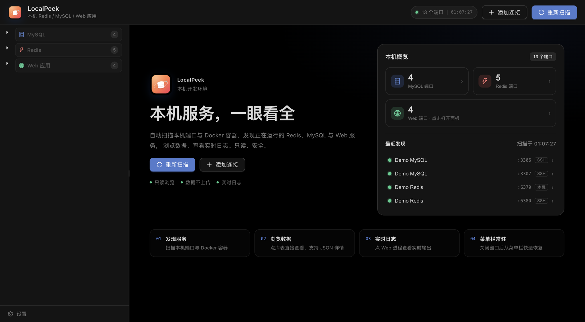
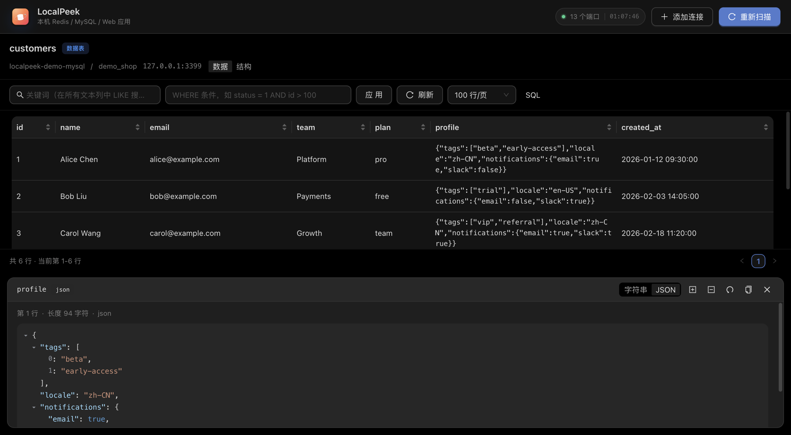
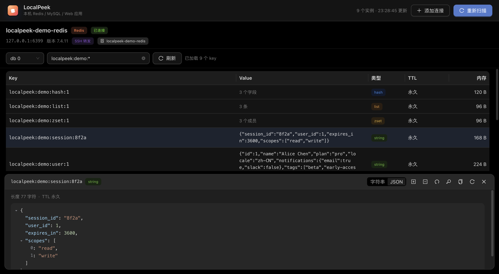
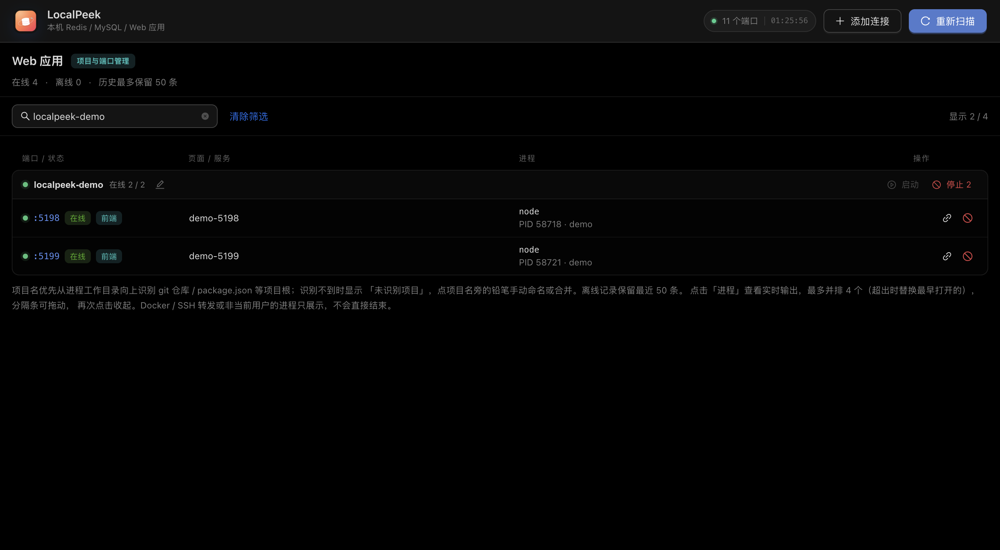
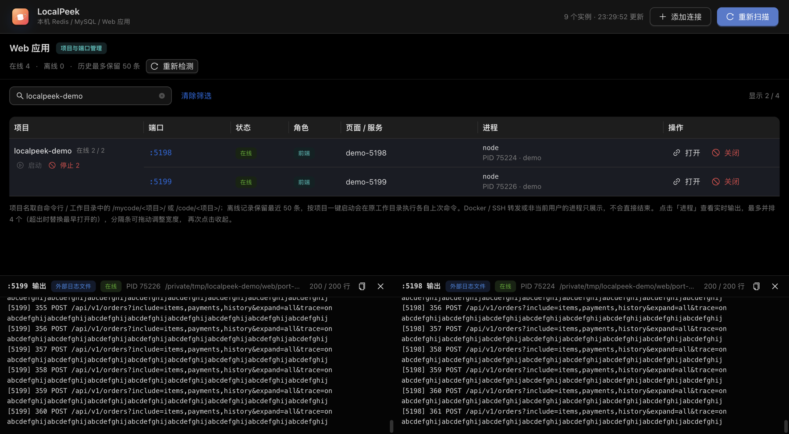
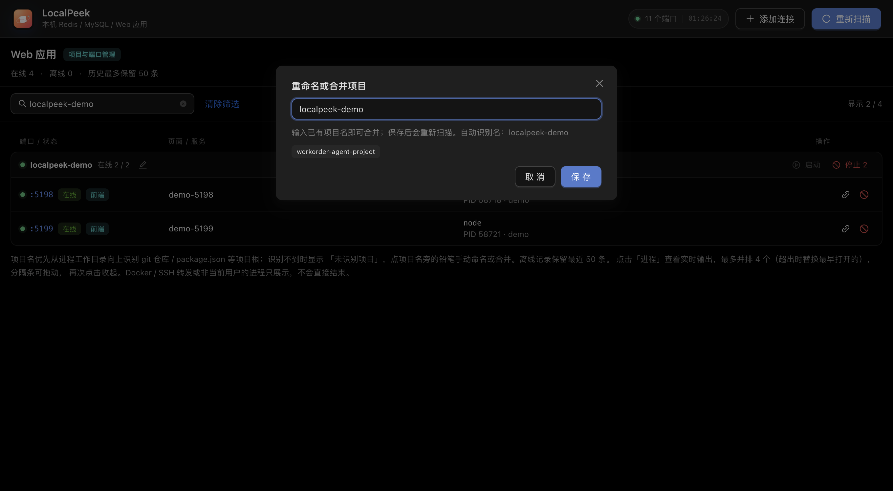

01
端口是谁占的？
自动扫描本机开发端口，展示项目、端口、角色、进程与 PID。Docker 和 SSH 转发也能识别。
macOS · 本地开发工具 · MIT 开源
LocalPeek 自动发现你电脑上的 Redis、MySQL 和正在运行的 Web 服务。只读浏览数据，实时查看进程日志， 不用再在终端、数据库客户端和进程管理器之间来回切换。

01 / 问题
服务跑在终端里，表要看数据库客户端，端口和 PID 还要 lsof，日志在另一个标签页。 每次排查问题，先花五分钟找回上下文。
01
自动扫描本机开发端口，展示项目、端口、角色、进程与 PID。Docker 和 SSH 转发也能识别。
02
点开就能翻页、排序、筛选；长字段在底部面板看完整内容，JSON 直接展开。
03
点进程直接在应用内看实时输出，最多并排 4 个面板，不用在终端标签页之间跳。
LocalPeek 不接管你的开发流程。它只把你已经在本机跑着的东西，摊开给你看。
02 / 功能
四个日常动作，一个窗口完成。
MySQL
点库、点表，直接翻。排序、每页行数、关键词搜索和 WHERE 条件都在； 每张表上次的设置会被记住，下次回来还是原样。

Redis
键列表直接带 Value 预览。长字符串和 JSON 点击后在底部看完整内容， 集合类型显示数量摘要，不用为了确认一个 key 反复点开详情。

Web 应用
自动识别本机开发服务，项目名从 git 仓库 / package.json 等项目根向上推导。 识别不到时显示「未识别项目」，点项目名旁的铅笔即可手动命名或合并。

实时日志
每个端口的日志区常驻在底部，最多并排 4 个面板；分隔条可拖动， 长行随面板宽度换行，新输出自动跟随到底部。

按表记忆
每张表的排序、分页和筛选独立保存，切表或重启都不丢。
JSON 详情
TEXT / JSON 字段在底部面板完整展示，支持逐层折叠。
多面板日志
并排查看最多 4 个服务的输出，宽度可拖，长行自动换行。
菜单栏常驻
红叉只隐藏窗口，当前页面和日志面板不丢；⌘Q 才退出。
界面一览
点击任意截图放大查看。

03 / 上手
不用账号，不用填写数据库连接。安装完成后，剩下的是点几下鼠标。
当前构建面向 Apple Silicon（M 系列）Mac。Intel Mac、Windows 和 Linux 暂不支持。
点页面上的「下载 macOS 版」。打开下载好的 dmg，把 LocalPeek 拖进「应用程序」文件夹。
在「应用程序」里找到 LocalPeek，右键 → 打开，再点一次「打开」。 应用未签名，这一步只需要做一次，之后双击即可。
xattr -dr com.apple.quarantine /Applications/LocalPeek.app
后再打开。
左侧会出现 MySQL、Redis 和 Web 应用。看到绿色圆点，就说明服务在线。 如果列表是空的，点右上角 重新扫描。
点左侧的数据库端口，再点数据库、点表名，右侧就会显示数据。 可以排序、翻页、加 WHERE 条件。点击带颜色的长字段，底部会出现完整内容面板。
点左侧 Web 应用，表格里会列出项目、端口、进程和页面标题。 点某一行里的「进程」，底部会打开该端口的实时日志；再点一次收起。
04 / 安全与边界
没有登录，没有云同步，没有遥测。LocalPeek 只读取你本机已经授权的信息。
MySQL 只生成单条 SELECT，Redis 只发只读命令。唯一例外是你在确认后关闭或启动本机进程。
自动发现只扫描本机配置的地址，没有服务器端组件，也没有任何数据上传。
MIT 许可，代码、构建脚本和安全说明都在 GitHub 上，可以自行审计或修改。
05 / 可调整
项目名按 git 仓库 / package.json 自动识别；识别不到时在项目头手动命名或合并。 扫描范围、Redis 数据库数量和历史条数通过配置文件调整，重启生效。
settings.webPortRanges 扩大或收窄 Web 服务扫描范围settings.redisDbs 适配自定义的 Redis 数据库数量settings.webHistoryLimit 控制离线端口历史保留条数settings.projectOverrides06 / FAQ
免费，MIT 开源。没有账号体系，也没有付费版。
当前只提供 Apple Silicon（arm64）构建。Intel Mac 需要自行从源码构建，暂时没有现成安装包。
还没有时间表。当前版本只针对 macOS，代码里已经抽出了平台层，后续会逐步补上。
不会。数据库访问是只读的，MySQL 查询只生成单条 SELECT。唯一的写操作是你在确认后关闭或启动本机进程。
在终端里直接启动的进程，输出留在终端的 pty 中，其他程序读不到。点「重启并捕获输出」让 LocalPeek 重启一次，之后就能持续显示日志。
不能。它们只展示，不会被结束，日志也读不到。请在容器或隧道侧处理。
不会。应用没有遥测、没有账号、没有云端组件。所有扫描和查询都在本机完成。
窗口只是隐藏，应用继续在菜单栏运行，当前页面、筛选和日志面板都会保留。点菜单栏图标可以重新显示窗口；要真正退出请按 ⌘Q，或使用菜单栏里的「退出 LocalPeek」。
退出应用，把 /Applications/LocalPeek.app 移到废纸篓，再删除 ~/Library/Application Support/LocalPeek 即可。
现在试试
下载即用，不需要账号。macOS Apple Silicon，MIT 开源。
v0.1.3 · 未签名构建 · 首次打开请右键 → 打开 · 仅 Apple Silicon